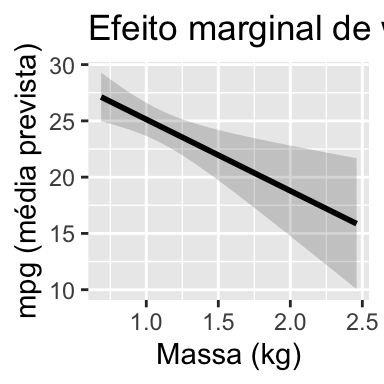
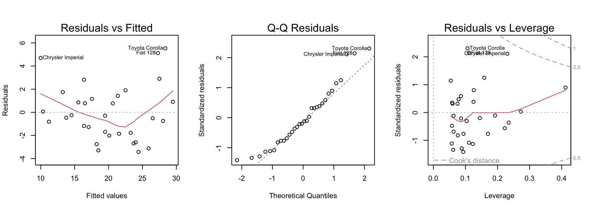

MMQ (OLS): \(\hat\beta = (X^\top X)^{-1}X^\top \mathbf y\).
Interpretação de \(\beta_j\): variação média em \(Y\) por unidade de \(X_j\), mantendo as restantes fixas.
O estimador MMQ \[
\hat\beta=(X^\top X)^{-1}X^\top y
\] só existe (e é único) se \(X^\top X\) for invertível ⇒ colunas de \(X\)linearmente independentes.
Interpretação.
- wt_kg: variação média de mpg por +1 kg, controlando hp e am (espera-se coeficiente negativo).
- hp: efeito parcial de potência (mpg ↓ quando hp ↑, dado wt e am fixos).
- am: diferença média entre manual e auto, para os mesmos wt_kg e hp.
- \(R^2\) ajustado e \(\hat\sigma\) medem qualidade do ajuste e dispersão residual.
pred_df <-bind_cols(grid_wt, as_tibble(pred)) |>rename(fit=fit, lwr=lwr, upr=upr)ggplot(pred_df, aes(wt_kg, fit)) +geom_ribbon(aes(ymin=lwr, ymax=upr), alpha=.2) +geom_line(linewidth=1) +labs(x="Massa (kg)", y="mpg (média prevista)",title="Efeito marginal de wt_kg com IC da média (95%) — hp e am fixos")

Leitura. Banda é IC da média; intervalo de predição seria mais largo (variação individual).
Diagnóstico e robustez: resíduos, QQ, distância de Cook
par(mfrow=c(1,3))plot(modA, which =1)plot(modA, which =2)plot(modA, which =5)
par(mfrow=c(1,1))

Multicolinearidade: VIF e interpretação
VIF (Variance Inflation Factor) mede quanto a variância de \(\hat\beta_j\) é inflacionada pela colinearidade de \(X_j\) com os restantes.
Definição via regressão auxiliar de \(X_j\) nas outras preditoras \(X_{-j}\): \[
\text{VIF}_j \;=\; \frac{1}{1-R_j^2},
\qquad
R_j^2 \;=\; R^2\Big(\,X_j \sim X_{-j}\,\Big).
\]
Relação com a variância de \(\hat\beta_j\): \[
\operatorname{Var}(\hat\beta_j)
\;=\;
\sigma^2\,\frac{\text{VIF}_j}{\sum_i (x_{ij}-\bar x_j)^2}.
\]
library(car)mod <-lm(mpg ~ wt + hp, data = mtcars)car::vif(mod)
wt hp
1.766625 1.766625
Regra prática:
VIF ≈ 1: sem colinearidade relevante
VIF ≳ 5 (às vezes 10): preocupante → investigar/reparametrizar
Efeito: VIF alto ⇒ erros-padrão grandes, ICs largos, sinais/valores de \(\hat\beta\) podem oscilar com pequenas mudanças nos dados.
Fatores
Em lm(mpg ~ wt_kg + hp + am), onde am é fator com níveis "auto" e "manual", o R cria variáveis indicadoras (0/1) para representar os níveis.
→ Um nível fica como base (escolhido automaticamente, tipicamente o primeiro); os restantes têm um coeficiente que mede o desvio face a essa base.
Como ler os coeficientes (sem interações):
ammanual: diferença média (manual − base) em mpg, mantendowt_kg e hp fixos.
Ex.: ammanual = 2.5 ⇒ carros manuais têm +2.5 mpg face à base para o mesmo peso e potência.
coef(lm(mpg ~ wt_kg + hp + am, data = mt))
(Intercept) wt_kg hp ammanual
34.00287512 -6.34617765 -0.03747873 2.08371013
Interações: quando o efeito depende de outra variável
modA_int <-lm(mpg ~ wt_kg * am + hp, data = mt)tidy(modA_int, conf.int =TRUE)
Interpretação.
- Sinal de Education (negativo) sugere menor fertilidade em regiões com mais educação, controlando restantes.
- Catholic positivo: efeito marginal mantendo o resto. Cuidado: correlação entre preditores muda a interpretação.
Como usar - Quanto menor, melhor (AIC/BIC em valores absolutos não têm significado isolado).
- Compare modelos ajustados aos mesmos dados; não é preciso serem aninhados.
Notas
Preferir AIC se o objetivo principal é previsão.
Preferir BIC se privilegia simplicidade/interpretação (penaliza mais o número de parâmetros).
Não substitui diagnóstico do modelo (resíduos, colinearidade, etc.).
mods <-list(base =lm(mpg ~1, data = mt),pars =lm(mpg ~ wt_kg + hp, data = mt),int =lm(mpg ~ wt_kg * am + hp, data = mt),full =lm(mpg ~ wt_kg + hp + am + qsec + gear, data = mt))tibble(modelo =names(mods),AIC =sapply(mods, AIC),BIC =sapply(mods, BIC))
# A tibble: 4 × 3
modelo AIC BIC
<chr> <dbl> <dbl>
1 base 209. 212.
2 pars 157. 163.
3 int 152. 160.
4 full 156. 167.
Boas práticas
Verificar pressupostos pela análise dos resíduos.
Verificar pontos influentes.
Causalidade ≠ correlação.
Explicar coeficientes em unidades e cenários relevantes.
Quantificar incerteza: ICs e intervalos de predição.
Exercício
Ajustar \(\text{mpg} \sim \text{wt}_\text{kg} + \text{hp} + \text{am}\) e reportar IC(95%) de cada coeficiente.
Testar a interação \(\text{wt}_\text{kg}:\text{am}\) e interpretar o termo cruzado.
Em swiss, calcular VIFs e discutir colinearidade; refazer o modelo com variáveis padronizadas.
Construir um cenário de previsão com IC da média e intervalo de predição.